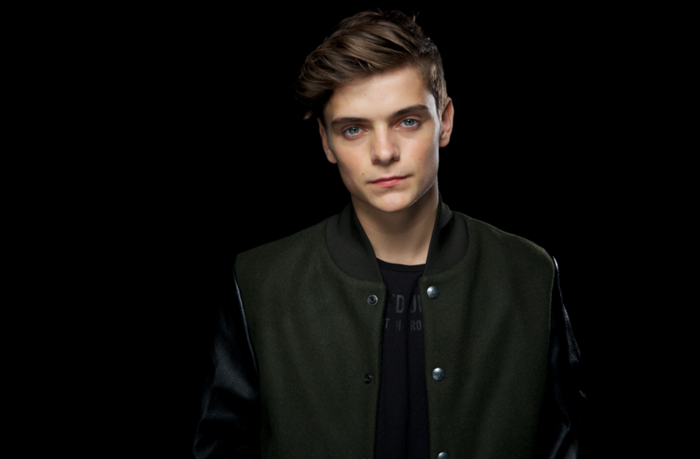

Martin Garrix
Who Is He
Martijn Gerard Garritsen (born 14 May 1996), professionally known as Martin Garrix and is also known under other pseudonyms such as Ytram and GRX, Martin Garrix is a Dutch DJ and record producer. His most known singles are "Animals", "In the Name of Love", and "Scared to Be Lonely". He was ranked number one on DJ Mag's Top 100 DJs list for three consecutive years (2016, 2017, and 2018).
He has performed at music festivals such as Coachella, Electric Daisy Carnival, Ultra Music Festival, Tomorrowland, and Creamfields. In 2014 he headlined the 1st edition of Ultra South Africa making this his first major festival. In the same year he became the youngest DJ to headline 2014 Ultra Music Festival at the age of 17. He was a resident DJ at Spain's Hï Ibiza (2017) and Ushuaïa Ibiza (2016 and 2018). He founded the label Stmpd Rcrds in 2016, months after leaving Spinnin' Records and before signing with Sony Music.
Early Life
Garrix was born as Martijn Gerard Garritsen on 14 May 1996 in Amstelveen in the Netherlands, the son of Gerard and Karin Garritsen. He has a younger sister named Laura. He showed musical interest at an early age and learned to play the guitar at the age of 8.
In 2004, he expressed interest in becoming a DJ after seeing Dutch DJ Tiësto perform at that year's Summer Olympics Opening Ceremony in Athens. He took particular inspiration from the track "Traffic", prompting him to download the specialist software FL Studio, and enabling him to start composing.
In 2013, he graduated from the Herman Brood Academy , a production school in Utrecht.
Career
Garrix was discovered by Tiësto , whom he described as inspirational, humble, and legendary. He had his beginnings with the songs "BFAM", a collaboration with Dutch DJ Julian Jordan, and "Just Some Loops", a collaboration with TV Noise. In the documentary What We Started, Garrix describes how he was discovered by the Dutch record label Spinnin' Records following the release of his remix for the Enrique Iglesias single "Tonight (I'm Loving You)". He signed with Spinnin' Records in 2012, releasing "Error 404", a collaboration with Dutch DJ Jay Hardway. In 2013, Garrix co-released "Torrent" with Dutch DJ Sidney Samson on Tiësto's Musical Freedom label.
Garrix gained fame through his solo release, "Animals", which was released on 16 June 2013. which was released on 16 June 2013. The single became a hit in several countries in Europe, and allowed Garrix to become the youngest person to reach number one on Beatport. which was released on 16 June 2013. The track appears on Dutch DJ Hardwell's album, Hardwell presents 'Revealed Volume 4'. On 30 September, Garrix released a remix of "Project T" by Sander Van Doorn and Belgian-Greek DJ duo Dimitri Vegas & Like Mike which quickly hit number one on the Beatport charts. He appeared on DJ Magazine's top 100 DJs list in 2013 as a new entry at number 40.
In 2015, Garrix experimented with progressive house and started producing progressive tracks aside from his signature big room sound. On 6 February, he released the track "Forbidden Voices" as a gift to his fans after his Facebook page reached 10 million likes.
Garrix launched his own record label called Stmpd Rcrds in the first quarter of 2016. Speaking about the label, he said that he wanted it to be a 'platform' for artists of various genres. On 11 March 2016, he released his first single via Stmpd Rcrds titled "Now That I've Found You", featuring the vocals of John Martin and Michel Zitron.
On 27 January 2017, he released "Scared to Be Lonely" a collaboration with British singer Dua Lipa as a single. He performed the song with Lipa on The Tonight Show Starring Jimmy Fallon in March before releasing two volumes of extended plays featuring twelve remixes.
On 23 February 2018, Garrix released his second collaboration with David Guetta and his third with Brooks with the song "Like I Do". Two days later, he headlined the closing ceremony of the Pyeongchang 2018 Winter Olympic Games at the Pyeongchang Olympic Stadium in South Korea. He was the closing act of the night, performing his newly released single as well as many others. His setlist is as follows: "Forever", "Together", "Animals", "Like I Do ", and "Pizza".
In February 2019, he performed at the Ultra Music Festival Australia, a two-day festival held in Sydney and Melbourne. In March 2019, he headlined Tomorrowland Winter, held in France, and Ultra Music Festival, held in Miami.
In February 2020, Garrix released a track called "Drown" with singer Clinton Kane. For the 2020 King's Day celebrations in April, Garrix played a set from the rooftop of A'Dam tower in Amsterdam in place of the usual festival's cancellation due to the COVID-19 pandemic. The next month, he released "Higher Ground", featured with singer John Martin.
Philanthropy
In May 2016, Garrix headlined an event in Los Angeles with all proceeds going to the non-profit organization Fuck Cancer, dedicated to early detection, prevention and providing support to those affected by cancer.
On 24 February 2017, Garrix was announced as an "international friend" for SOS Children's Village in South Africa, a non-profit organization that "builds families for orphaned, abandoned, and other vulnerable children around the world". Speaking to Billboard, he said "it is awful that so many children around the world don't have the support of a caring family". Following the Mexico earthquake in 2017, Garrix donated $10000 of his fee as Ultra Mexico line up.
On 28 February 2019, Garrix visited the SOS Children's Village in South Africa while on tour for Ultra South Africa. During his visit Garrix performed a one-hour DJ set to an excited crowd of one hundred children and young people, some aged just three years old and accompanied by their SOS mothers.
In September 2019, Garrix held a show in his home country Holland with all proceeds going towards the Warchild Holland Charity. During this show, he raised more than €270,000. In June 2020, he was appeared in a public service announcement alongside other celebs for War Child, an organization that supports and empowers the most vulnerable communities, focusing on children and their families.
Book
On 23 August 2018, Garrix posted a picture of the cover of his then upcoming book Martin Garrix Life = Crazy, containing photographs of his career life and personal life. The photographs featured in the book were taken by Louis Van Baar. The book was released in October 2018.